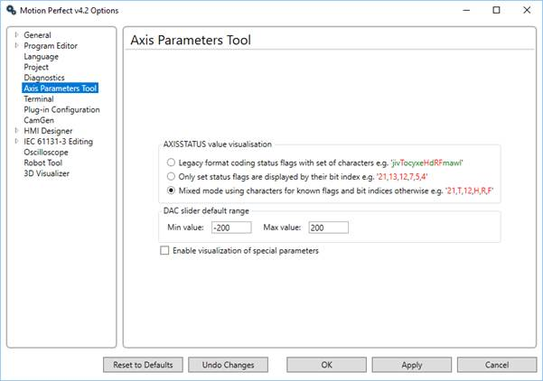

Options – Axis Parameters Tool

AXISSTATUS visualization
This controls how the AXISSTATUS parameter is displayed in
the parameter grid. The parameter can be displayed in one of three ways:
-
Legacy Format – This is the same as
Motion Perfect
2 and shows each known status bit as an alphabetic character, lower case green
for clear, upper case red for set.
-
Numeric Set Flag Format – This shows all known set status
bits as their bit number. No clear bits are shown.
-
Mixed Set Flag Format – This shows all known set bits as
an alphabetic character and all unknown set bits as their bit number. No clear
bits are shown.
Unknown flag bits can occur when new features are added to a
controller.
DAC slider default range
This specifies the default range of values used for the
slider control used to adjust the value of the DAC parameter.
Enable visualization of Special Parameters
If this is checked, some extra special and/or experimental
parameters can be selected for display. These parameters are generally
associated with new or experimental controller functionality and are of no use
to normal users.